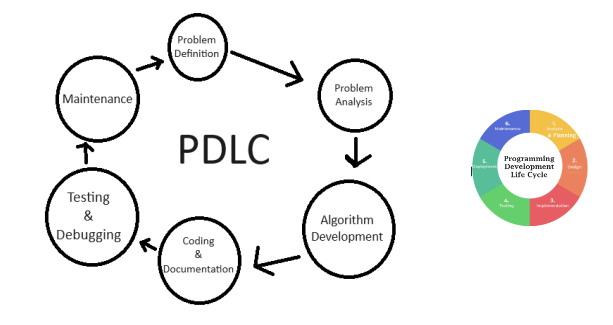

The Software Development Life Cycle
Our team employs the Software Development Life Cycle (SDLC) to program the software for our robot. This cycle is interconnected with the rest of our techniques, such as the System Development Life Cycle, which includes SCRUM and other models like sprints.
While the System DLС organizes the team as a whole, the Software DLС is specifically responsible for the programming development side of our robot's software. Within the Software DLС, we have the Programming Development Life Cycle (PDLC) that helps manage the workflow of the programming part of the software creation. This cycle includes tasks like fixing bugs in the code and improving specific aspects of the software.
It's important to be careful when using the abbreviation SDLC, as it can refer to both the Software Development Life Cycle and the System Development Life Cycle.
The Process and its Variations
The Software Development Life Cycle is a process used to develop, write, and maintain well-structured code. The steps for the SDLC may be worded differently depending on the source, but the process is essentially the same across all companies and organizations. For example, one website might list the steps as planning, defining, designing, building, testing, and deployment, while another might use planning, analysis, design, implementation, testing & integration, and maintenance. Our team's portfolio uses the following steps: analysis & planning, design, implementation, testing, deployment, and maintenance. Despite variations in wording and grouping of steps, the SDLC remains the same. Each organization may have its unique way of maintaining the process, such as combining analysis and planning into one step, or using different terminology, like "build" instead of "implementation." Overall, the SDLC is an important technique for every programmer to follow, but it can be adapted to fit the needs of each unique team or organization.
The Software Development Life Cycle can vary greatly between teams and organizations. Some may have more detailed processes, consisting of six steps, while others may simplify it to only four.
In the same way that each software development life cycle (SDLC) can be unique, the programming development life cycle (PDLC) can also be unique.
The General Phases of a Development Life Cycle
There are various Software Development Life Cycles and other Development Life Cycles. However, it is a good idea to simplify them into four basic steps. These steps can be as basic as the ones shown in the simplified SDLC image displayed above with these steps: prepare, create, test, and fix. Regardless of the development life cycle being used, these four general steps can be followed to ensure accuracy in development:
1. Plan and Prepare • Learn about the topic • Research and collect data • Brainstorm ideas • Design a solution • Set up an organizational method 2. Create • Expand on the ideas and organization • Follow the planned flow • Build or add code • Add relevant information and comments • Create the final product 3. Test • Run the code or product • Examine the results • Analyze the code or product 4. Fix and Improve • Identify areas that need fixing or improvement • Brainstorm solutions • Design and implement the solution • Keep testing until the desired outcome is achieved.